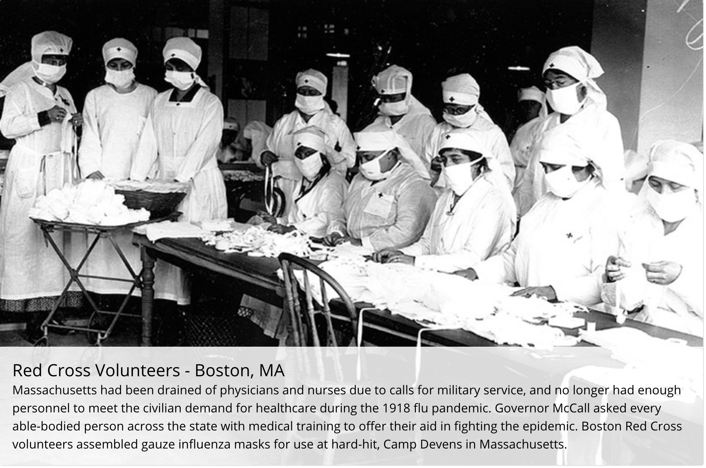
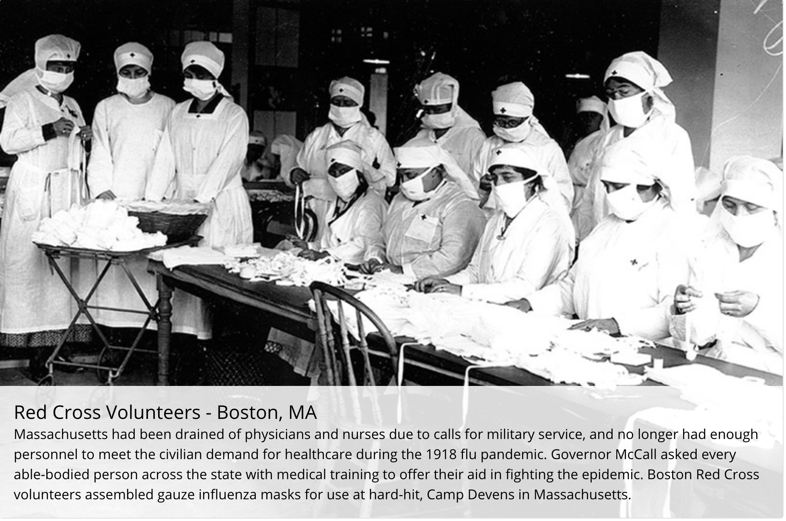

1918 Spanish Influenza Pandemic
The 1918 influenza pandemic was the most severe pandemic in recent history. It was caused by an H1N1 virus with genes of avian origin. Although there is not universal consensus regarding where the virus originated, it spread worldwide during 1918-1919. In the United States, it was first identified in military personnel in spring 1918.
It is estimated that about 500 million people or one-third of the world’s population became infected with this virus. The number of deaths was estimated to be at least 50 million worldwide with about 675,000 occurring in the United States. Mortality was high in people younger than 5 years old, 20-40 years old, and 65 years and older. The high mortality in healthy people, including those in the 20-40 year age group, was a unique feature of this pandemic.
While the 1918 H1N1 virus has been synthesized and evaluated, the properties that made it so devastating are not well understood. With no vaccine to protect against influenza infection and no antibiotics to treat secondary bacterial infections that can be associated with influenza infections,control efforts worldwide were limited to non-pharmaceutical interventions such as isolation, quarantine, good personal hygiene, use of disinfectants, and limitations of public gatherings, which were applied unevenly.
Source: Center for Disease Control and Protection(https://www.cdc.gov/flu/pandemic-resources/1918-commemoration/historical-images.htm)


 
